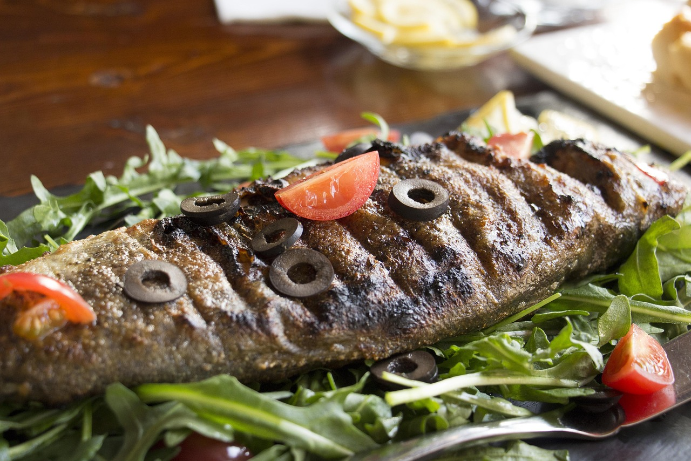
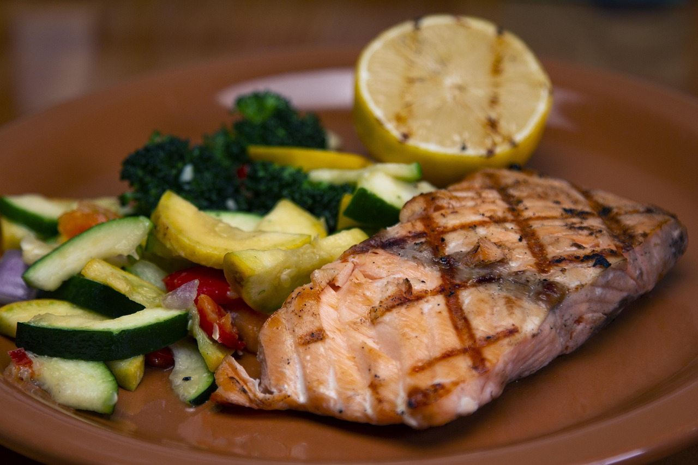

Restaurant de pește și fructe de mare în Constanța
Bonfish
Peste tot gustul mării
Preparate din pește și fructe de mare, servite pe Strada I. Gh. Duca. Ține-ți masa din timp: rezervăm cu drag.


Aromele Mării Negre, puse pe masă
Bonfish din Constanța gătește pește și fructe de mare după rețete simple, care lasă gustul mării să vorbească singur.
Preparatele vin la masă într-un ambient relaxat, pe Strada I. Gh. Duca. Vino cu familia sau cu prietenii, iar dacă vrei să fii sigur că ai locul preferat, rezervă-ți masa din timp.
-
Gustul mării
Preparate din pește și fructe de mare.
-
Atmosferă relaxată
Potrivit pentru o masă cu familia sau cu prietenii.
-
În Constanța
Ne găsești pe Strada I. Gh. Duca.
Din farfurie, cu poftă



Rezervări de mese
Pentru o seară plăcută, asigură-te din timp că ai masa preferată. Sună-ne și îți pregătim locul. Pentru întrebări, ne poți scrie și pe WhatsApp.
Te așteptăm la masă
- Adresă
- Strada I. Gh. Duca, Constanța
- Telefon și rezervări
- 0722 452 522